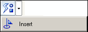
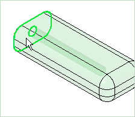
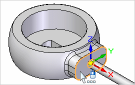
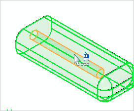
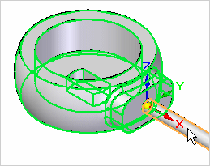
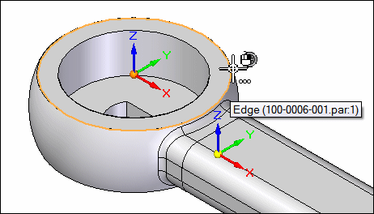
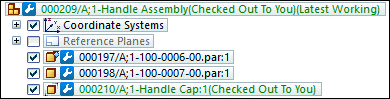
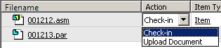

Activity: Create an assembly
Try this activity to learn how to create an assembly in a Teamcenter-managed environment using parts from the Teamcenter Parts Library.
After completing this activity, you will be able to:
-
Place parts into an assembly file using the Teamcenter Parts Library.
-
Use the Create Part In-Place command in a managed environment.
-
Save and upload the assembly into Teamcenter.
-
Recognize the relationship between a draft document and the parent item.
Instructions for loading the activity files are found in Activity data set and configuration requirements. The activities assume ISO templates are loaded.
Start Solid Edge with Teamcenter enabled.
From the File menu, click New→ ISO Metric Assembly.
Log in to Teamcenter when prompted.
Notice the document name formula listed in PathFinder is incomplete.
The document has not been given a name, so a temporary name consists of the description Object (Asm1). The document exists in memory until it is saved.
Click the Teamcenter Parts Library tab  .
.
The Teamcenter Parts Library tab looks very similar to the unmanaged Parts Library tab. Use care to choose the Teamcenter Parts Library tab to work in the managed environment.
Use the View tab→Show group→Panes command  to control the display of individual docking window panes, such as PathFinder and Teamcenter Parts Library.
to control the display of individual docking window panes, such as PathFinder and Teamcenter Parts Library.
Set your folder to Valve.
This lesson assumes the training files have been loaded into Teamcenter. You should see the files displayed in the folder named Valve.
Right-click inside the Teamcenter Parts Library and click Columns.
The Format Columns dialog box is displayed.
Select the check box adjacent to the Item Name and click OK.
In the Teamcenter Parts Library, click and drag the Item Name column so that it follows the Item ID column.
To dismiss the warning message indicating that you must first save the document before placing the first item in the assembly, click OK.
Save the document by clicking Save  on the Quick Access toolbar.
on the Quick Access toolbar.
The New Document dialog box is displayed. This dialog box is used to assign attributes to the document. You will see a similar dialog box whenever new files are created or existing files change.
The table cells containing red asterisks indicate required information. You can type the information or have it generated for you.
In the New Document dialog box, verify the Item Type is set to Item, then click Assign All  .
.
The Item ID, Revision, Item Name, and Dataset Name are assigned to the document. The Item ID can be thought of as a document number. The value for the Item Name is equivalent to the project name in Solid Edge. Its value should be descriptive of the document being saved. You can change the values on this dialog box.
Change the Item Name to Handle Assembly.
Enter a Dataset Description of Assembly Created in Activity 4.
The Dataset Description field can hold up to 240 characters and should contain a lengthy description of the data.
In the New Document dialog box, click Perform Actions .
The document is saved to disk and created in Teamcenter.
From the Teamcenter Parts Library, drag the item with the Item Name, Handle, into the assembly window.
Since this is the first part placed in the assembly, the part is positioned relative to the reference planes and is grounded. After you have placed the first part in an assembly, you position additional parts using assembly relationships.
Drag the item with the Item Name, Cover, into the assembly window.
On the Flast Fit command bar, click Relationship Types→ Insert, to join the face of the cover with the face of the handle.

The PromptBar instructs you to Click on the face to mate or axis to align.
Click the face of the handle cover.

Click the face of the handle.

To define the axis to align, click the cylinder of the handle cover.

Then click the cylinder of the handle.

The part is fully constrained.
Save the document by clicking Save on the Quick Access toolbar.
From the Home tab, Components group, click Create Part In-Place.
In the Create Part In-Place Options dialog box, set the Place the Origin option to By graphic input. Set the Create In-Place option to Create component then edit in-place.
Click OK.
In the Create In-Place command bar, ensure the Iso Metric Part.par template is selected.
When you are prompted to click to place the origin or press F3 to lock plane, click the outer edge of the handle as shown.

On the command bar, click  to accept the selection.
to accept the selection.
The New Document dialog box is used to specify attributes of the new part you are creating with the Create In-Place command.
Verify the Item Type is set to Item, then click Assign All to automatically assign an Item ID, Revision, Item Name, and Dataset Name.
Change the Item Name to Handle Cap.
Enter a Dataset Description of Part Created in Activity 4.
Click Perform Actions.
From the Home tab, select Solids group→Extrude.
In the Extrude command bar, set the Selection type to Single.
Click the edge of the handle, then right-click to accept.
Define the feature extent by positioning the cursor above the region.
Set the distance to 2.00 mm.
Click Save on the Quick Access toolbar.
Click Close And Return.
Fit the view of the Assembly using the Fit command.
-
Notice the three items in PathFinder that are registered in Teamcenter and comprise the assembly.

The release status of each component is
 Working.
Working.The document status of the part file that is the cap of the handle is Checked Out To You because the file has not been closed and you have write access.
-
Choose Teamcenter tab→Close→Close All.
When you close the assembly, Teamcenter becomes aware and notes the relationship between the parts and the assembly.
-
In the Upload dialog box, click inside the Action cell for the part you created.

Your filename will vary from what is shown in the illustration.
The value for the action to be performed can be set to either Check-in or Upload.
-
If you set the action to Check-in, the document is saved to Teamcenter and made available for other users.
-
If you set the action to Upload, the document is saved to Teamcenter, but remains checked out to you and write access is not available to other users.
-
This concludes Part 1 of the activity for this lesson. You do not need to exit Solid Edge.
In this activity, you learned how to create new managed document content and use the Create Part In-Place command to create a part within an assembly. You also learned to how to view document and release status information and upload documents into Teamcenter.
-
True or False: You can use PathFinder to in-place activate a part of a subassembly.
-
In the top pane of Pathfinder you can do all of the following except:
-
a. View components in collapsed or expanded form.
-
b. Determine the current status of the components within the assembly.
-
c. Rename documents, reference planes, and coordinate systems.
-
d. Determine how the assembly was constructed.
-
-
In the Teamcenter-managed environment, an unsaved document is shown in PathFinder using the default document name formula that is defined on the ________________ page of the Solid Edge Options dialog box.
-
True or False: You can use PathFinder to determine a managed document's status.
-
Describe the difference between the function of the Parts Library tab and the Teamcenter Parts Library tab.
-
True — You can use PathFinder to in-place activate a part or subassembly so you can make edits to individual assembly components while viewing the entire assembly.
-
In the top pane of PathFinder you can perform all of the functions listed except for (C). In the managed environment, you cannot use PathFinder to rename documents.
-
In the Teamcenter-managed environment, an unsaved document is shown in PathFinder using the default document name formula that is defined on the Helpers page of the Solid Edge Options dialog box.
-
True — After a document has been saved in the managed environment, the document status is displayed in PathFinder after the document formula.
Example:(Checked Out to You)
-
The Teamcenter Parts Library tab displays parts from the Teamcenter-managed environment. The Parts Library tab displays the contents of the active parts folder from the unmanaged Solid Edge environment.